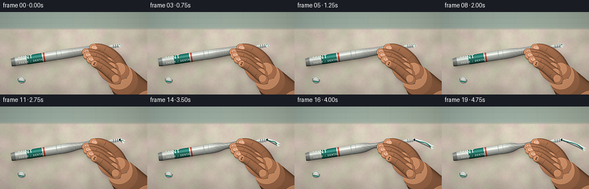
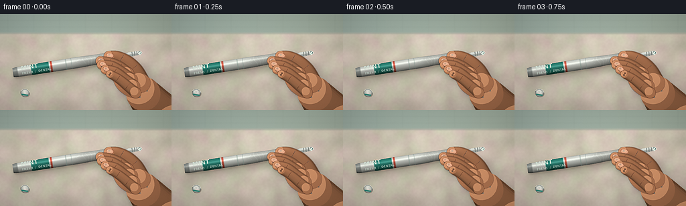
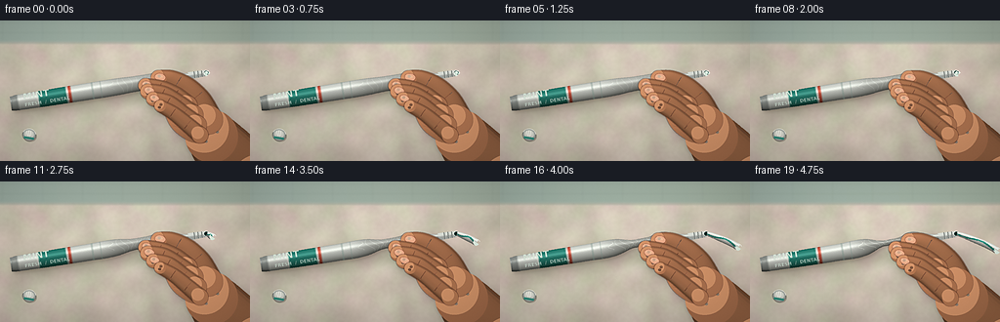
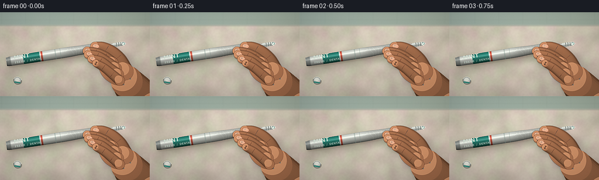

CODING AGENTS AS PIXEL WORLD MODELS
traex/DeepSeek-V4.1-Flash · mechanics_0020
点击播放 · 原生 RGB 像素
逐轮保存的候选
回放视频、检查图与代码变化。
每份候选均可单独播放。实际图片检查记录在下方工具轨迹中。
候选 01播放与检查图
点击播放 · 原生 RGB 像素


展开代码变化
--- 上一保存版本
+++ 本次保存版本
@@ -0,0 +1,883 @@
+"""Procedural toothpaste-tube squeeze for the PixelWorld v2 contract."""
+
+from __future__ import annotations
+
+import math
+from pathlib import Path
+
+import numpy as np
+from PIL import Image, ImageChops, ImageDraw, ImageFilter, ImageFont
+
+import artifact_io
+
+
+OUT_W, OUT_H = 256, 144
+W, H = 1024, 576
+FRAMES = 20
+FPS = 4.0
+CASE_DIR = Path(__file__).resolve().parent
+
+SKIN = np.array([190, 126, 89], dtype=np.float32)
+SKIN_LIGHT = np.array([238, 181, 137], dtype=np.float32)
+SKIN_SHADOW = np.array([108, 57, 40], dtype=np.float32)
+PEARL = np.array([225, 231, 225], dtype=np.float32)
+MINT = np.array([43, 145, 132], dtype=np.float32)
+MINT_DARK = np.array([19, 79, 73], dtype=np.float32)
+CORAL = np.array([215, 89, 72], dtype=np.float32)
+
+P0 = np.array([78.0, 352.0], dtype=np.float32)
+P1 = np.array([766.0, 244.0], dtype=np.float32)
+D = P1 - P0
+BODY_LEN = float(np.linalg.norm(D))
+D /= BODY_LEN
+N = np.array([-D[1], D[0]], dtype=np.float32)
+NOZZLE = P1 + D * 71.0
+
+
+def clamp(x: float, lo: float = 0.0, hi: float = 1.0) -> float:
+ return max(lo, min(hi, x))
+
+
+def smoothstep(a: float, b: float, x: float) -> float:
+ u = clamp((x - a) / (b - a))
+ return u * u * (3.0 - 2.0 * u)
+
+
+def lerp(a, b, u):
+ return np.asarray(a) * (1.0 - u) + np.asarray(b) * u
+
+
+def rgb(c) -> tuple[int, int, int]:
+ return tuple(int(clamp(v, 0, 255)) for v in c)
+
+
+def blur_noise(seed: int, size: tuple[int, int], cells: tuple[int, int], blur: float):
+ rng = np.random.default_rng(seed)
+ raw = rng.random((cells[1], cells[0])).astype(np.float32)
+ image = Image.fromarray(np.uint8(raw * 255)).resize(size, Image.Resampling.BICUBIC)
+ return np.asarray(image.filter(ImageFilter.GaussianBlur(blur)), dtype=np.float32) / 255.0
+
+
+def make_background() -> Image.Image:
+ yy, xx = np.mgrid[0:H, 0:W].astype(np.float32)
+ wall = np.zeros((H, W, 3), dtype=np.float32)
+ counter = np.zeros((H, W, 3), dtype=np.float32)
+
+ wall_u = yy / 125.0
+ wall[:] = lerp((151, 170, 158), (183, 191, 178), clamp(wall_u[0, 0]))
+ wall[..., 0] += (xx / W) * 4.0
+ wall[..., 2] += (1.0 - xx / W) * 5.0
+
+ broad = blur_noise(7, (W, H), (17, 10), 13.0)
+ fine = blur_noise(11, (W, H), (130, 74), 1.2)
+ marble = blur_noise(13, (W, H), (13, 8), 17.0)
+ marble2 = blur_noise(29, (W, H), (28, 16), 8.0)
+ counter_base = np.array([205, 197, 181], dtype=np.float32)
+ counter[:] = counter_base
+ counter += (broad[..., None] - 0.5) * 22.0
+ counter += (fine[..., None] - 0.5) * 7.0
+ counter += np.stack(
+ [
+ (marble - 0.5) * 16.0,
+ (marble2 - 0.5) * 13.0,
+ (marble - 0.5) * 10.0,
+ ],
+ axis=-1,
+ )
+ counter *= (0.92 + 0.10 * (1.0 - yy / H))[..., None]
+ counter += np.clip((xx - 780.0) / 900.0, 0, 1)[..., None] * np.array([4, 2, 0])
+
+ horizon = 116.0
+ blend = np.clip((yy - (horizon - 8.0)) / 16.0, 0, 1)
+ base = wall * (1.0 - blend[..., None]) + counter * blend[..., None]
+ image = Image.fromarray(np.uint8(np.clip(base, 0, 255)))
+ draw = ImageDraw.Draw(image, "RGBA")
+
+ # Soft tile joints and counter edge remain deliberately out of focus.
+ for y in (38, 77):
+ draw.line((0, y, W, y), fill=(71, 86, 78, 34), width=2)
+ for x in range(45, W, 155):
+ draw.line((x, 0, x, 106), fill=(76, 89, 82, 28), width=2)
+ draw.line((0, horizon, W, horizon + 2), fill=(88, 78, 67, 44), width=4)
+ draw.line((0, horizon + 5, W, horizon + 8), fill=(255, 255, 248, 70), width=2)
+ image = image.filter(ImageFilter.GaussianBlur(3.2))
+
+ # Small silver cap in the left foreground establishes the missing tube cap.
+ cap = Image.new("RGBA", (70, 62), (0, 0, 0, 0))
+ cd = ImageDraw.Draw(cap)
+ cd.ellipse((8, 9, 62, 53), fill=(55, 53, 50, 82))
+ cd.ellipse((6, 3, 58, 50), fill=(151, 158, 154, 255), outline=(77, 83, 82, 210), width=2)
+ cd.ellipse((12, 8, 51, 39), fill=(199, 205, 199, 255))
+ cd.ellipse((18, 10, 43, 31), fill=(226, 230, 223, 255))
+ cd.arc((6, 3, 58, 50), 197, 347, fill=(242, 243, 234, 230), width=2)
+ for x in (17, 25, 33, 41, 49):
+ cd.line((x, 8, x - 2, 45), fill=(90, 96, 94, 80), width=1)
+ cd.rectangle((14, 35, 52, 43), fill=(42, 129, 119, 230))
+ cap = cap.rotate(-9, resample=Image.Resampling.BICUBIC, expand=True)
+ image.paste(cap, (111, 440), cap)
+
+ return image
+
+
+BACKGROUND = make_background()
+
+
+def body_half_height(s, q: float, phase: float) -> float:
+ base = 32.0 * (0.93 + 0.095 * math.sin(math.pi * s))
+ base *= 1.0 - 0.66 * smoothstep(0.82, 1.0, s)
+ squeeze = 0.60 * q * math.exp(-0.5 * ((s - 0.735) / 0.105) ** 2)
+ bulge = (
+ 0.24 * q * math.exp(-0.5 * ((s - 0.575) / 0.055) ** 2)
+ + 0.42 * q * math.exp(-0.5 * ((s - 0.865) / 0.055) ** 2)
+ )
+ h = base * max(0.20, 1.0 - squeeze + bulge)
+ h += (
+ 1.45
+ * q
+ * math.sin(52.0 * s + phase)
+ * math.exp(-0.5 * ((s - 0.73) / 0.13) ** 2)
+ )
+ if s < 0.035:
+ h *= 0.91 + 0.09 * (s / 0.035)
+ return max(7.0, h)
+
+
+def body_center(s, q: float):
+ lift = 4.2 * q * math.exp(-0.5 * ((s - 0.735) / 0.12) ** 2)
+ return P0 + D * (BODY_LEN * s) - N * lift
+
+
+def body_point(s, v, q: float, phase: float):
+ return body_center(s, q) + N * (body_half_height(s, q, phase) * v)
+
+
+def body_outline(q: float, phase: float):
+ ss = np.linspace(0.0, 1.0, 181)
+ top = [tuple(body_point(s, -1.0, q, phase)) for s in ss]
+ bottom = [tuple(body_point(s, 1.0, q, phase)) for s in reversed(ss)]
+ return top + bottom
+
+
+def body_mask_image(q: float, phase: float) -> Image.Image:
+ mask = Image.new("L", (W, H), 0)
+ ImageDraw.Draw(mask).polygon(body_outline(q, phase), fill=255)
+ return mask
+
+
+def material_for_s(s: float):
+ if s < 0.040:
+ return np.array([169, 177, 174], dtype=np.float32), 0.92
+ if s < 0.145:
+ return PEARL, 1.0
+ if s < 0.158:
+ return np.array([245, 248, 240], dtype=np.float32), 1.0
+ if s < 0.315:
+ return MINT, 0.93
+ if s < 0.326:
+ return np.array([238, 244, 237], dtype=np.float32), 1.0
+ if s < 0.342:
+ return CORAL, 0.96
+ return PEARL, 1.0
+
+
+def draw_tube(frame: Image.Image, q: float, phase: float) -> Image.Image:
+ draw = ImageDraw.Draw(frame)
+ us = np.linspace(0.0, 1.0, 181)
+ vs = np.linspace(-1.0, 1.0, 25)
+
+ # Shaded cylindrical mesh, including the soft shoulder taper.
+ for i in range(len(us) - 1):
+ s0, s1 = float(us[i]), float(us[i + 1])
+ base0, mul0 = material_for_s(s0)
+ base1, mul1 = material_for_s(s1)
+ for j in range(len(vs) - 1):
+ v0, v1 = float(vs[j]), float(vs[j + 1])
+ p00 = body_point(s0, v0, q, phase)
+ p01 = body_point(s0, v1, q, phase)
+ p10 = body_point(s1, v0, q, phase)
+ p11 = body_point(s1, v1, q, phase)
+ vc = 0.5 * (v0 + v1)
+ root = math.sqrt(max(0.0, 1.0 - vc * vc))
+ light = 0.52 + 0.30 * (-vc) + 0.24 * root
+ spec = 0.22 * math.exp(-0.5 * ((vc + 0.38) / 0.14) ** 2)
+ edge = 1.0 - 0.14 * smoothstep(0.80, 1.0, abs(vc))
+ bright = clamp((light + spec) * edge, 0.34, 1.18)
+ base = 0.5 * (base0 + base1) * bright
+ base = lerp(base, (246, 249, 240), spec * 0.55)
+ # Fine print bands keep the packaging from reading as blank plastic.
+ if 0.45 < s0 < 0.462 or 0.50 < s0 < 0.507:
+ base = lerp(base, (104, 131, 124), 0.28)
+ color = rgb(base * (0.99 if mul0 > 0.95 else mul0))
+ draw.polygon(
+ [tuple(p00), tuple(p10), tuple(p11), tuple(p01)],
+ fill=color,
+ )
+
+ body_mask = body_mask_image(q, phase)
+ layer = Image.new("RGBA", (W, H), (0, 0, 0, 0))
+ ld = ImageDraw.Draw(layer)
+
+ # Flat silver crimp, with grooves aligned across the sealed end.
+ for k, s in enumerate((0.008, 0.016, 0.024, 0.032)):
+ a = body_point(s, -0.78, q, phase)
+ b = body_point(s, 0.78, q, phase)
+ ld.line([tuple(a), tuple(b)], fill=(67, 73, 72, 110), width=2)
+ a2 = body_point(s + 0.0025, -0.72, q, phase)
+ b2 = body_point(s + 0.0025, 0.72, q, phase)
+ ld.line([tuple(a2), tuple(b2)], fill=(235, 238, 231, 70), width=1)
+
+ # Compression darkening and highlights around the fingers.
+ grip = body_center(0.735, q)
+ patch = Image.new("RGBA", (W, H), (0, 0, 0, 0))
+ pd = ImageDraw.Draw(patch)
+ pd.ellipse(
+ (
+ grip[0] - 125,
+ grip[1] - 47,
+ grip[0] + 125,
+ grip[1] + 47,
+ ),
+ fill=(57, 56, 51, int(42 + 52 * q)),
+ )
+ patch = patch.filter(ImageFilter.GaussianBlur(23))
+ layer = Image.alpha_composite(layer, patch)
+ ld = ImageDraw.Draw(layer)
+
+ # Wrinkles radiate through the squeezed section, clipped by the tube mask.
+ for i in range(9):
+ center = 0.615 + i * 0.030
+ alpha = int((45 + 60 * q) * math.exp(-0.5 * ((center - 0.735) / 0.115) ** 2))
+ pts_dark = []
+ pts_light = []
+ for v in np.linspace(-0.86, 0.86, 18):
+ bend = 0.020 * math.sin(math.pi * v + i * 1.13) + 0.020 * v
+ s = center + bend * (0.35 + 0.65 * q)
+ p = body_point(s, float(v), q, phase)
+ pts_dark.append(tuple(p))
+ pl = p + D * 2.0 - N * 0.7
+ pts_light.append(tuple(pl))
+ ld.line(pts_dark, fill=(57, 58, 54, alpha), width=3)
+ ld.line(pts_light, fill=(255, 255, 247, max(15, alpha // 3)), width=1)
+
+ # Bright rims at the two pressure bulges.
+ for s_center, alpha in ((0.565, 54), (0.875, 62)):
+ pts = []
+ for v in np.linspace(-0.72, 0.25, 24):
+ s = s_center + 0.015 * math.sin(8 * v)
+ p = body_point(s, float(v), q, phase)
+ pts.append(tuple(p))
+ ld.line(pts, fill=(255, 255, 244, int(alpha * q)), width=2)
+
+ layer.putalpha(ImageChops.multiply(layer.getchannel("A"), body_mask))
+ frame = Image.alpha_composite(frame.convert("RGBA"), layer)
+
+ # Package lettering, rendered on a flat patch and clipped to the cylinder.
+ text_layer = Image.new("RGBA", (W, H), (0, 0, 0, 0))
+ try:
+ font_big = ImageFont.truetype(
+ "/usr/share/fonts/truetype/dejavu/DejaVuSans-Bold.ttf", 36
+ )
+ font_small = ImageFont.truetype(
+ "/usr/share/fonts/truetype/dejavu/DejaVuSans-Bold.ttf", 18
+ )
+ except OSError:
+ font_big = ImageFont.load_default()
+ font_small = ImageFont.load_default()
+ text_patch = Image.new("RGBA", (250, 90), (0, 0, 0, 0))
+ td = ImageDraw.Draw(text_patch)
+ td.text((5, 8), "MINT", font=font_big, fill=(232, 251, 238, 238))
+ td.text((8, 52), "FRESH / DENTAL", font=font_small, fill=(226, 247, 235, 220))
+ text_patch = text_patch.rotate(9.0, resample=Image.Resampling.BICUBIC, expand=True)
+ label_center = body_center(0.245, q) - N * 4.0
+ text_layer.paste(
+ text_patch,
+ (int(label_center[0] - text_patch.width / 2), int(label_center[1] - text_patch.height / 2)),
+ text_patch,
+ )
+ text_layer.putalpha(ImageChops.multiply(text_layer.getchannel("A"), body_mask))
+ frame = Image.alpha_composite(frame, text_layer)
+
+ # White threaded neck and dark opening.
+ draw = ImageDraw.Draw(frame)
+ neck_len = 70.0
+ for k in range(34):
+ t0 = k / 34.0
+ t1 = (k + 1) / 34.0
+ a0 = P1 + D * (neck_len * t0)
+ a1 = P1 + D * (neck_len * t1)
+ r0 = 13.5 - 2.4 * t0
+ r1 = 13.5 - 2.4 * t1
+ c0 = (174, 180, 177)
+ c1 = (210, 216, 210)
+ draw.polygon(
+ [
+ tuple(a0 - N * r0),
+ tuple(a1 - N * r1),
+ tuple(a1 + N * r1),
+ tuple(a0 + N * r0),
+ ],
+ fill=c0,
+ )
+ draw.polygon(
+ [
+ tuple(a0 - N * r0),
+ tuple(a1 - N * r1),
+ tuple(a1 - N * (r1 * 0.15)),
+ tuple(a0 - N * (r0 * 0.15)),
+ ],
+ fill=c1,
+ )
+ draw.polygon(
+ [
+ tuple(a0 + N * (r0 * 0.20)),
+ tuple(a1 + N * (r1 * 0.20)),
+ tuple(a1 + N * r1),
+ tuple(a0 + N * r0),
+ ],
+ fill=(151, 156, 153),
+ )
+ for t in (0.34, 0.55, 0.76):
+ c = P1 + D * (neck_len * t)
+ r = 13.5 - 2.4 * t
+ draw.line(
+ [tuple(c - N * r), tuple(c + N * r)],
+ fill=(97, 106, 104, 155),
+ width=3,
+ )
+ draw.line(
+ [tuple(c - N * r + D * 2), tuple(c + N * r + D * 2)],
+ fill=(245, 247, 240, 120),
+ width=1,
+ )
+ opening = Image.new("RGBA", (W, H), (0, 0, 0, 0))
+ od = ImageDraw.Draw(opening)
+ od.ellipse(
+ (NOZZLE[0] - 12, NOZZLE[1] - 10, NOZZLE[0] + 10, NOZZLE[1] + 10),
+ fill=(26, 58, 55, 235),
+ outline=(233, 238, 231, 220),
+ width=2,
+ )
+ od.ellipse(
+ (NOZZLE[0] - 7, NOZZLE[1] - 6, NOZZLE[0] + 4, NOZZLE[1] + 5),
+ fill=(10, 31, 30, 240),
+ )
+ frame = Image.alpha_composite(frame, opening)
+ return frame
+
+
+def paste_extrusion(q: float) -> float:
+ return smoothstep(0.25, 0.98, q) ** 1.35
+
+
+def paste_path(e: float):
+ n = 58
+ u = np.linspace(0.0, 1.0, n)
+ start = NOZZLE + D * 2.0
+ length = 156.0 * e
+ x = start[0] + length * u
+ y = start[1] + 4.0 * u + 66.0 * e * u**2 + 9.0 * e * np.sin(math.pi * 1.15 * u)
+ centers = np.stack([x, y], axis=-1)
+ width = (7.8 + 5.1 * u + 1.6 * np.sin(math.pi * u)) * (0.88 + 0.12 * min(1.0, e * 4.0))
+ return centers, width
+
+
+def draw_paste(frame: Image.Image, e: float, t: float) -> Image.Image:
+ centers, widths = paste_path(e)
+ draw = ImageDraw.Draw(frame)
+ tangents = np.gradient(centers, axis=0)
+ norms = np.stack([-tangents[:, 1], tangents[:, 0]], axis=-1)
+ norms /= np.maximum(np.linalg.norm(norms, axis=1, keepdims=True), 1e-5)
+
+ bands = np.linspace(-1.0, 1.0, 15)
+ for i in range(len(centers) - 1):
+ for j in range(len(bands) - 1):
+ v0, v1 = float(bands[j]), float(bands[j + 1])
+ p00 = centers[i] + norms[i] * widths[i] * v0
+ p01 = centers[i] + norms[i] * widths[i] * v1
+ p10 = centers[i + 1] + norms[i + 1] * widths[i + 1] * v0
+ p11 = centers[i + 1] + norms[i + 1] * widths[i + 1] * v1
+ vc = 0.5 * (v0 + v1)
+ u = i / (len(centers) - 1)
+ stripe_center = 0.38 * math.sin(u * math.pi * 2.4 + 0.4)
+ stripe = abs(vc - stripe_center) < 0.25
+ base = MINT if stripe else PEARL
+ root = math.sqrt(max(0.0, 1.0 - vc * vc))
+ light = 0.58 + 0.28 * (-vc) + 0.22 * root
+ spec = 0.18 * math.exp(-0.5 * ((vc + 0.48) / 0.18) ** 2)
+ color = np.clip(base * (light + spec), 0, 255)
+ color = lerp(color, (255, 255, 248), spec * 0.45)
+ draw.polygon([tuple(p00), tuple(p10), tuple(p11), tuple(p01)], fill=rgb(color))
+
+ # Rounded, slightly swollen tip.
+ if len(centers) > 1:
+ tip = centers[-1]
+ tangent = centers[-1] - centers[-3]
+ tangent /= max(np.linalg.norm(tangent), 1e-5)
+ normal = np.array([-tangent[1], tangent[0]])
+ r = widths[-1] * 1.02
+ tip_poly = []
+ for a in np.linspace(-math.pi / 2, math.pi / 2, 20):
+ p = tip + normal * (math.cos(a) * r) + tangent * (math.sin(a) * r * 0.78)
+ tip_poly.append(tuple(p))
+ draw.polygon(tip_poly, fill=(218, 234, 223))
+ draw.arc(
+ (
+ tip[0] - r,
+ tip[1] - r,
+ tip[0] + r,
+ tip[1] + r,
+ ),
+ 165,
+ 345,
+ fill=(249, 255, 246, 190),
+ width=2,
+ )
+
+ # A tiny bead remains visible even before the ribbon starts moving.
+ if e < 0.08:
+ bead_r = 5.0 + 4.0 * e / 0.08
+ draw.ellipse(
+ (
+ NOZZLE[0] - bead_r,
+ NOZZLE[1] - bead_r,
+ NOZZLE[0] + bead_r,
+ NOZZLE[1] + bead_r,
+ ),
+ fill=(231, 243, 232),
+ outline=(119, 171, 158, 180),
+ width=1,
+ )
+ draw.ellipse(
+ (
+ NOZZLE[0] - bead_r * 0.35,
+ NOZZLE[1] - bead_r * 0.55,
+ NOZZLE[0] + bead_r * 0.15,
+ NOZZLE[1] - bead_r * 0.12,
+ ),
+ fill=(255, 255, 249),
+ )
+ return frame
+
+
+def catmull_rom(points, samples_per_segment: int = 28):
+ pts = np.asarray(points, dtype=np.float32)
+ padded = np.vstack([pts[0], pts, pts[-1]])
+ out = []
+ for i in range(1, len(padded) - 2):
+ p0, p1, p2, p3 = padded[i - 1 : i + 3]
+ for j in range(samples_per_segment):
+ u = j / samples_per_segment
+ u2, u3 = u * u, u * u * u
+ p = 0.5 * (
+ 2.0 * p1
+ + (-p0 + p2) * u
+ + (2.0 * p0 - 5.0 * p1 + 4.0 * p2 - p3) * u2
+ + (-p0 + 3.0 * p1 - 3.0 * p2 + p3) * u3
+ )
+ out.append(p)
+ out.append(pts[-1])
+ return np.asarray(out, dtype=np.float32)
+
+
+def closed_spline(points, samples_per_segment: int = 26):
+ pts = np.asarray(points, dtype=np.float32)
+ out = []
+ n = len(pts)
+ for i in range(n):
+ p0, p1, p2, p3 = pts[(i - 1) % n], pts[i], pts[(i + 1) % n], pts[(i + 2) % n]
+ for j in range(samples_per_segment):
+ u = j / samples_per_segment
+ u2, u3 = u * u, u * u * u
+ p = 0.5 * (
+ 2.0 * p1
+ + (-p0 + p2) * u
+ + (2.0 * p0 - 5.0 * p1 + 4.0 * p2 - p3) * u2
+ + (-p0 + 3.0 * p1 - 3.0 * p2 + p3) * u3
+ )
+ out.append(p)
+ return np.asarray(out, dtype=np.float32)
+
+
+def limb_geometry(ctrl, radii, samples: int = 92):
+ path = catmull_rom(ctrl, samples)
+ tang = np.gradient(path, axis=0)
+ tang /= np.maximum(np.linalg.norm(tang, axis=1, keepdims=True), 1e-5)
+ norm = np.stack([-tang[:, 1], tang[:, 0]], axis=-1)
+ rr = np.interp(np.linspace(0, 1, len(path)), np.linspace(0, 1, len(radii)), radii)
+ return path, tang, norm, rr
+
+
+def limb_polygon(ctrl, radii):
+ path, _, norm, rr = limb_geometry(ctrl, radii)
+ left = path - norm * rr[:, None]
+ right = path + norm * rr[:, None]
+ return [tuple(p) for p in np.vstack([left, right[::-1]])]
+
+
+def add_limb_mask(mask: Image.Image, ctrl, radii):
+ ImageDraw.Draw(mask).polygon(limb_polygon(ctrl, radii), fill=255)
+ path, _, _, rr = limb_geometry(ctrl, radii)
+ d = ImageDraw.Draw(mask)
+ for p, r in ((path[0], rr[0]), (path[-1], rr[-1])):
+ d.ellipse((p[0] - r, p[1] - r, p[0] + r, p[1] + r), fill=255)
+
+
+def draw_rotated_ellipse(layer, center, axes, angle_deg, fill, outline=None, width=1):
+ cx, cy = center
+ rx, ry = axes
+ angle = math.radians(angle_deg)
+ ca, sa = math.cos(angle), math.sin(angle)
+ pts = []
+ for a in np.linspace(0, 2 * math.pi, 40, endpoint=False):
+ x, y = rx * math.cos(a), ry * math.sin(a)
+ pts.append((cx + ca * x - sa * y, cy + sa * x + ca * y))
+ ImageDraw.Draw(layer).polygon(pts, fill=fill, outline=outline, width=width)
+
+
+def draw_limb(
+ frame: Image.Image,
+ ctrl,
+ radii,
+ shade: float = 1.0,
+ crease_t=(0.34, 0.67),
+ nail: bool = True,
+ outline: bool = True,
+):
+ path, tang, norm, rr = limb_geometry(ctrl, radii)
+ mask = Image.new("L", (W, H), 0)
+ ImageDraw.Draw(mask).polygon(limb_polygon(ctrl, radii), fill=255)
+ md = ImageDraw.Draw(mask)
+ for p, r in ((path[0], rr[0]), (path[-1], rr[-1])):
+ md.ellipse((p[0] - r, p[1] - r, p[0] + r, p[1] + r), fill=255)
+
+ layer = Image.new("RGBA", (W, H), (0, 0, 0, 0))
+ ld = ImageDraw.Draw(layer)
+ bands = np.linspace(-1.0, 1.0, 21)
+ light3 = np.array([-0.43, -0.76, 0.49], dtype=np.float32)
+ light3 /= np.linalg.norm(light3)
+ for i in range(len(path) - 1):
+ for j in range(len(bands) - 1):
+ v0, v1 = float(bands[j]), float(bands[j + 1])
+ p00 = path[i] + norm[i] * rr[i] * v0
+ p01 = path[i] + norm[i] * rr[i] * v1
+ p10 = path[i + 1] + norm[i + 1] * rr[i + 1] * v0
+ p11 = path[i + 1] + norm[i + 1] * rr[i + 1] * v1
+ vc = 0.5 * (v0 + v1)
+ root = math.sqrt(max(0.0, 1.0 - vc * vc))
+ nx, ny = norm[i]
+ dot = vc * (nx * light3[0] + ny * light3[1]) + root * light3[2]
+ diffuse = 0.57 + 0.43 * max(0.0, float(dot))
+ spec = 0.16 * math.exp(-0.5 * ((vc + 0.43) / 0.18) ** 2)
+ color = SKIN * (diffuse * shade)
+ color = lerp(color, SKIN_LIGHT, spec * 0.45)
+ edge = 1.0 - 0.20 * smoothstep(0.78, 1.0, abs(vc))
+ color *= edge
+ ld.polygon([tuple(p00), tuple(p10), tuple(p11), tuple(p01)], fill=rgb(color))
+
+ # Round end caps receive a small radial highlight.
+ for idx, end_scale in ((0, 0.78), (-1, 0.92)):
+ p, r = path[idx], rr[idx]
+ ld.ellipse((p[0] - r, p[1] - r, p[0] + r, p[1] + r), fill=rgb(SKIN * 0.88 * shade))
+ hx = p[0] - r * 0.27
+ hy = p[1] - r * 0.31
+ hr = r * end_scale
+ ld.ellipse((hx - hr, hy - hr, hx + hr, hy + hr), fill=rgb(lerp(SKIN, SKIN_LIGHT, 0.28)))
+
+ # Joint folds and a soft pressure pad at the very tip.
+ for ct in crease_t:
+ i = int(ct * (len(path) - 1))
+ p, n, r = path[i], norm[i], rr[i]
+ pts = []
+ for v in np.linspace(-0.72, 0.72, 15):
+ bend = 2.4 * (1.0 - v * v) * math.sin(math.pi * ct)
+ q = p + n * (v * r) + tang[i] * bend
+ pts.append(tuple(q))
+ ld.line(pts, fill=(104, 55, 40, 82), width=2)
+ pts2 = [(x, y + 2.4) for x, y in pts]
+ ld.line(pts2, fill=(246, 190, 149, 45), width=1)
+ tip_i = len(path) - 3
+ tp, tn, tr = path[tip_i], norm[tip_i], rr[tip_i]
+ for v in (-0.28, 0.28):
+ c = tp + tn * (v * tr)
+ ld.ellipse((c[0] - 6, c[1] - 5, c[0] + 6, c[1] + 5), fill=(238, 181, 143, 38))
+
+ if outline:
+ grown = mask.filter(ImageFilter.MaxFilter(5))
+ out_layer = Image.new("RGBA", (W, H), (74, 39, 30, 0))
+ out_layer.putalpha(grown.point(lambda x: int(x * 0.42)))
+ frame.alpha_composite(out_layer)
+
+ layer.putalpha(ImageChops.multiply(layer.getchannel("A"), mask))
+ frame.alpha_composite(layer)
+
+ if nail:
+ tip = path[-1]
+ tangent = path[-1] - path[-6]
+ tangent /= max(np.linalg.norm(tangent), 1e-5)
+ angle = math.degrees(math.atan2(tangent[1], tangent[0]))
+ nail_center = tip - tangent * rr[-1] * 0.20 - np.array([0.0, rr[-1] * 0.18])
+ nail_layer = Image.new("RGBA", (W, H), (0, 0, 0, 0))
+ draw_rotated_ellipse(
+ nail_layer,
+ tuple(nail_center),
+ (rr[-1] * 0.74, rr[-1] * 0.52),
+ angle,
+ fill=(229, 169, 137, 230),
+ outline=(139, 78, 58, 170),
+ width=2,
+ )
+ draw_rotated_ellipse(
+ nail_layer,
+ (nail_center[0] - 2, nail_center[1] - 3),
+ (rr[-1] * 0.42, rr[-1] * 0.18),
+ angle,
+ fill=(250, 211, 181, 145),
+ )
+ nail_layer.putalpha(ImageChops.multiply(nail_layer.getchannel("A"), mask))
+ frame.alpha_composite(nail_layer)
+ return frame
+
+
+def palm_shape():
+ anchors = np.array(
+ [
+ [838, 482],
+ [861, 422],
+ [844, 353],
+ [804, 312],
+ [748, 300],
+ [697, 322],
+ [674, 365],
+ [684, 414],
+ [714, 458],
+ [770, 496],
+ [823, 502],
+ ],
+ dtype=np.float32,
+ )
+ return closed_spline(anchors, 24)
+
+
+def palm_mask(shape):
+ mask = Image.new("L", (W, H), 0)
+ ImageDraw.Draw(mask).polygon([tuple(p) for p in shape], fill=255)
+ return mask
+
+
+def draw_palm(frame: Image.Image, shape, mask):
+ yy, xx = np.mgrid[0:H, 0:W].astype(np.float32)
+ light = 0.78 + 0.18 * (1.0 - yy / H) + 0.10 * (1.0 - xx / W)
+ light += 0.14 * np.exp(-((xx - 738) ** 2 + (yy - 375) ** 2) / (2 * 92**2))
+ light -= 0.14 * np.exp(-((xx - 827) ** 2 + (yy - 459) ** 2) / (2 * 86**2))
+ color = SKIN[None, None, :] * light[..., None]
+ texture = blur_noise(42, (W, H), (95, 60), 1.5)
+ color *= (0.985 + 0.035 * texture[..., None])
+ layer = Image.fromarray(np.uint8(np.clip(color, 0, 255))).convert("RGBA")
+ layer.putalpha(mask)
+
+ grown = mask.filter(ImageFilter.MaxFilter(5))
+ outline = Image.new("RGBA", (W, H), (74, 39, 30, 0))
+ outline.putalpha(grown.point(lambda x: int(x * 0.40)))
+ frame.alpha_composite(outline)
+ frame.alpha_composite(layer)
+
+ folds = Image.new("RGBA", (W, H), (0, 0, 0, 0))
+ fd = ImageDraw.Draw(folds)
+ for pts in (
+ [(707, 357), (739, 371), (777, 363)],
+ [(694, 397), (730, 411), (772, 403)],
+ [(708, 438), (746, 448), (786, 440)],
+ ):
+ path = catmull_rom(pts, 18)
+ fd.line([tuple(p) for p in path], fill=(105, 57, 41, 54), width=2)
+ fd.line([(p[0], p[1] + 3) for p in path], fill=(245, 189, 147, 34), width=1)
+ # Knuckle highlights make the palm feel lit rather than flat.
+ for c in ((735, 335), (760, 365), (777, 402), (788, 438)):
+ fd.ellipse((c[0] - 24, c[1] - 14, c[0] + 24, c[1] + 14), fill=(249, 198, 156, 20))
+ folds.putalpha(ImageChops.multiply(folds.getchannel("A"), mask))
+ frame.alpha_composite(folds)
+ return frame
+
+
+def hand_geometry(t: float, q: float, shake: float):
+ sx = shake + 1.2 * q
+ sy = 2.2 * q
+ off = np.array([sx, sy], dtype=np.float32)
+
+ forearm = [np.array([1084, 710]) + off, np.array([945, 580]) + off, np.array([855, 478]) + off]
+ thumb = [
+ np.array([842, 414]) + off,
+ np.array([805, 346]) + off,
+ np.array([755, 295]) + off,
+ np.array([699, 262]) + off,
+ np.array([650, 253]) + off,
+ ]
+ fingers = [
+ (
+ [np.array([762, 359]) + off, np.array([714, 322]) + off, np.array([657, 294]) + off, np.array([599, 281]) + off],
+ [37, 36, 32, 27],
+ ),
+ (
+ [np.array([782, 397]) + off, np.array([728, 357]) + off, np.array([668, 318]) + off, np.array([608, 304]) + off],
+ [40, 38, 34, 28],
+ ),
+ (
+ [np.array([798, 435]) + off, np.array([746, 396]) + off, np.array([688, 350]) + off, np.array([629, 333]) + off],
+ [37, 35, 31, 26],
+ ),
+ (
+ [np.array([810, 473]) + off, np.array([764, 434]) + off, np.array([708, 389]) + off, np.array([656, 360]) + off],
+ [31, 29, 26, 22],
+ ),
+ ]
+ return forearm, thumb, fingers, off
+
+
+def draw_hand_shadow(frame: Image.Image, tube_mask: Image.Image, shapes):
+ mask = Image.new("L", (W, H), 0)
+ forearm, thumb, fingers, _ = shapes
+ add_limb_mask(mask, forearm, [150, 125, 102])
+ add_limb_mask(mask, thumb, [54, 51, 47, 38, 29])
+ for ctrl, radii in fingers:
+ add_limb_mask(mask, ctrl, radii)
+ palm = palm_shape()
+ ImageDraw.Draw(mask).polygon([tuple(p) for p in palm], fill=255)
+ shadow = mask.filter(ImageFilter.GaussianBlur(11))
+ shadow = ImageChops.multiply(shadow, tube_mask)
+ layer = Image.new("RGBA", (W, H), (50, 37, 30, 0))
+ layer.putalpha(shadow.point(lambda x: int(x * 0.34)))
+ frame.alpha_composite(layer)
+
+
+def draw_cast_shadow(frame: Image.Image, tube_mask: Image.Image, shapes):
+ mask = Image.new("L", (W, H), 0)
+ forearm, thumb, fingers, _ = shapes
+ add_limb_mask(mask, forearm, [150, 125, 102])
+ add_limb_mask(mask, thumb, [54, 51, 47, 38, 29])
+ for ctrl, radii in fingers:
+ add_limb_mask(mask, ctrl, radii)
+ ImageDraw.Draw(mask).polygon([tuple(p) for p in palm_shape()], fill=255)
+ mask = ImageChops.lighter(mask, tube_mask)
+
+ layer = Image.new("RGBA", (W, H), (53, 43, 36, 0))
+ shifted = Image.new("L", (W, H), 0)
+ shifted.paste(mask, (19, 25))
+ soft = shifted.filter(ImageFilter.GaussianBlur(24))
+ layer.putalpha(soft.point(lambda x: int(x * 0.33)))
+ frame.alpha_composite(layer)
+
+ contact = Image.new("L", (W, H), 0)
+ contact.paste(mask, (4, 7))
+ contact = contact.filter(ImageFilter.GaussianBlur(6))
+ layer2 = Image.new("RGBA", (W, H), (57, 43, 35, 0))
+ layer2.putalpha(contact.point(lambda x: int(x * 0.26)))
+ frame.alpha_composite(layer2)
+
+
+def draw_hand(frame: Image.Image, shapes):
+ forearm, thumb, fingers, _ = shapes
+ draw_limb(
+ frame,
+ forearm,
+ [150, 125, 102],
+ shade=0.91,
+ crease_t=(),
+ nail=False,
+ outline=False,
+ )
+ palm = palm_shape()
+ pm = palm_mask(palm)
+ draw_palm(frame, palm, pm)
+
+ # Thumb lies over the upper edge of the tube; fingers curl across its face.
+ draw_limb(
+ frame,
+ thumb,
+ [55, 52, 48, 39, 30],
+ shade=1.00,
+ crease_t=(0.32, 0.64),
+ nail=True,
+ outline=True,
+ )
+ for idx, (ctrl, radii) in enumerate(fingers):
+ draw_limb(
+ frame,
+ ctrl,
+ radii,
+ shade=0.96 + 0.015 * idx,
+ crease_t=(0.34, 0.68),
+ nail=idx < 3,
+ outline=True,
+ )
+ return frame
+
+
+def finish_frame(frame: Image.Image, frame_index: int, t: float) -> np.ndarray:
+ arr = np.asarray(frame.convert("RGB"), dtype=np.float32)
+ yy, xx = np.mgrid[0:H, 0:W].astype(np.float32)
+ dx = (xx - W * 0.50) / (W * 0.56)
+ dy = (yy - H * 0.48) / (H * 0.62)
+ vignette = 1.0 - 0.22 * np.clip(np.sqrt(dx * dx + dy * dy) - 0.32, 0, 1) ** 1.35
+ arr *= vignette[..., None]
+
+ # Gentle warm highlight / cool shadow split tone.
+ lum = arr.mean(axis=2, keepdims=True) / 255.0
+ arr += np.array([3.5, 1.2, -1.0])[None, None, :] * lum
+ arr -= np.array([-1.0, 0.0, 3.0])[None, None, :] * (1.0 - lum)
+ arr = np.clip(arr, 0, 255)
+ arr = 255.0 * (arr / 255.0) ** 0.96
+
+ rng = np.random.default_rng(7000 + frame_index)
+ grain = rng.normal(0.0, 1.45, (H, W, 1))
+ arr = np.clip(arr + grain, 0, 255).astype(np.uint8)
+
+ out = Image.fromarray(arr).resize((OUT_W, OUT_H), Image.Resampling.LANCZOS)
+ out = out.filter(ImageFilter.UnsharpMask(radius=1.0, percent=62, threshold=2))
+ return np.asarray(out, dtype=np.uint8)
+
+
+def render_frame(index: int) -> np.ndarray:
+ t = index / (FRAMES - 1)
+ q = 0.10 + 0.90 * (t**1.58)
+ q += 0.012 * math.sin(index * 2.1) * smoothstep(0.72, 1.0, t)
+ q = clamp(q, 0.0, 1.0)
+ shake = 1.15 * smoothstep(0.72, 1.0, t) * math.sin(index * 1.73 + 0.4)
+ phase = 0.75 + 0.35 * t
+
+ frame = BACKGROUND.copy().convert("RGBA")
+ shapes = hand_geometry(t, q, shake)
+ tube_mask = body_mask_image(q, phase)
+ draw_cast_shadow(frame, tube_mask, shapes)
+ frame = draw_tube(frame, q, phase)
+ e = paste_extrusion(q)
+ frame = draw_paste(frame, e, t)
+ draw_hand_shadow(frame, tube_mask, shapes)
+ frame = draw_hand(frame, shapes)
+
+ # Slight exposure lift follows the pressure peak, as if the camera is
+ # adapting to the faster action late in the timelapse.
+ arr = np.asarray(frame.convert("RGB"), dtype=np.float32)
+ arr *= 1.0 + 0.025 * smoothstep(0.55, 1.0, t)
+ frame = Image.fromarray(np.uint8(np.clip(arr, 0, 255)))
+ return finish_frame(frame, index, t)
+
+
+def main():
+ frames = [render_frame(i) for i in range(FRAMES)]
+ artifact_io.save(frames, CASE_DIR)
+
+ # A small local preview is useful for humans while pixels.npz remains the
+ # authoritative RGB representation.
+ images = [Image.fromarray(f) for f in frames]
+ images[0].save(
+ CASE_DIR / "preview.gif",
+ save_all=True,
+ append_images=images[1:],
+ duration=int(1000 / FPS),
+ loop=0,
+ optimize=False,
+ )
+
+
+if __name__ == "__main__":
+ main()
候选 02播放与检查图
点击播放 · 原生 RGB 像素


展开代码变化
--- 上一保存版本
+++ 本次保存版本
@@ -125,7 +125,7 @@
def body_half_height(s, q: float, phase: float) -> float:
base = 32.0 * (0.93 + 0.095 * math.sin(math.pi * s))
base *= 1.0 - 0.66 * smoothstep(0.82, 1.0, s)
- squeeze = 0.60 * q * math.exp(-0.5 * ((s - 0.735) / 0.105) ** 2)
+ squeeze = 0.72 * q * math.exp(-0.5 * ((s - 0.735) / 0.105) ** 2)
bulge = (
0.24 * q * math.exp(-0.5 * ((s - 0.575) / 0.055) ** 2)
+ 0.42 * q * math.exp(-0.5 * ((s - 0.865) / 0.055) ** 2)
@@ -143,7 +143,7 @@
def body_center(s, q: float):
- lift = 4.2 * q * math.exp(-0.5 * ((s - 0.735) / 0.12) ** 2)
+ lift = 7.5 * q * math.exp(-0.5 * ((s - 0.735) / 0.12) ** 2)
return P0 + D * (BODY_LEN * s) - N * lift
@@ -700,8 +700,8 @@
def hand_geometry(t: float, q: float, shake: float):
- sx = shake + 1.2 * q
- sy = 2.2 * q
+ sx = shake + 0.8 * q
+ sy = 8.5 * q
off = np.array([sx, sy], dtype=np.float32)
forearm = [np.array([1084, 710]) + off, np.array([945, 580]) + off, np.array([855, 478]) + off]
@@ -831,7 +831,11 @@
grain = rng.normal(0.0, 1.45, (H, W, 1))
arr = np.clip(arr + grain, 0, 255).astype(np.uint8)
- out = Image.fromarray(arr).resize((OUT_W, OUT_H), Image.Resampling.LANCZOS)
+ # Tighten the composition around the tube and nozzle while retaining a
+ # little room for the paste ribbon to extend off the right edge.
+ out = Image.fromarray(arr).crop((36, 30, 1004, 574)).resize(
+ (OUT_W, OUT_H), Image.Resampling.LANCZOS
+ )
out = out.filter(ImageFilter.UnsharpMask(radius=1.0, percent=62, threshold=2))
return np.asarray(out, dtype=np.uint8)
可观测工具轨迹
实际执行的命令与返回图片。
命令 1exit 0
/bin/bash -c "pwd && rg --files -g 'GENERATION_RULES.md' -g 'task_spec.json' -g 'prompt.txt' -g '"'!node_modules'"' -g '"'!vendor'"'"
命令 2exit 0
/bin/bash -c "git status --short && find . -maxdepth 2 -type f -printf '%p %s bytes\\n' | sort | head -200"
命令 3exit 0
/bin/bash -c 'cat GENERATION_RULES.md'
命令 4exit 0
/bin/bash -c "cat task_spec.json && printf '\\n--- prompt ---\\n' && cat prompt.txt"
命令 5exit 0
/bin/bash -c "sed -n '1,240p' artifact_io.py"
命令 6exit 0
/bin/bash -c "sed -n '1,240p' player_template.html"
命令 7exit 0
/bin/bash -c "which ffmpeg || true; which chafa || true; which viu || true; which img2txt || true; python - <<'PY'
import PIL, numpy
print('PIL', PIL.__version__, 'numpy', numpy.__version__)
try:
import scipy; print('scipy', scipy.__version__)
except Exception as e: print('no scipy', e)
PY"命令 8exit 0
/bin/bash -c 'ls /usr/share/fonts/truetype/dejavu/DejaVuSans-Bold.ttf /usr/share/fonts/truetype/dejavu/DejaVuSans.ttf 2>/dev/null || true'
命令 9exit 0
/bin/bash -c 'time python generate.py'
命令 10exit 0
/bin/bash -c "python - <<'PY'
from PIL import Image
from pathlib import Path
import numpy as np
files=sorted(Path('frames').glob('*.png'))
ims=[Image.open(f).convert('RGB') for f in files]
# 5x4 contact sheet at native scale, doubled for inspection.
sheet=Image.new('RGB',(256*5,144*4),(20,20,20))
for i,im in enumerate(ims):
sheet.paste(im,((i%5)*256,(i//5)*144))
sheet.resize((1280*2,576*2),Image.Resampling.NEAREST).save('contact_sheet.png')
# approximate ASCII luminance/color check for visual tooling-free inspection
for idx in (0,5,10,15,19):
im=np.asarray(ims[idx]).astype(float)
print(idx, 'mean', im.mean((0,1)).round(1), 'std', im.std((0,1)).round(1), 'dark%', (im.mean(2)<30).mean().round(3))
print('files', len(files), 'sizes', sorted(set(im.size for im in ims)))
PY"命令 11exit 0
/bin/bash -c "python - <<'PY'
from PIL import Image
import numpy as np
from pathlib import Path
# Classify downsampled RGB into semantic palettes and print maps.
frames=[np.asarray(Image.open(f).convert('RGB'),dtype=np.float32) for f in sorted(Path('frames').glob('*.png'))]
pal={
'S':np.array([190,126,89]), 's':np.array([238,181,137]), 'd':np.array([108,57,40]),
'W':np.array([225,231,225]), 'm':np.array([43,145,132]), 'c':np.array([215,89,72]),
'B':np.array([177,184,172]), 'k':np.array([205,197,181]), ' ':np.array([155,160,150])}
for idx in (0,10,19):
im=frames[idx]
# nearest semantic palette in 4x4 blocks, then 4x4 glyphs
h,w,_=im.shape
small=np.asarray(Image.fromarray(im.astype('uint8')).resize((64,36),Image.Resampling.BOX),dtype=np.float32)
keys=list(pal); cols=np.array([pal[k] for k in keys])
dist=((small[:,:,None,:]-cols[None,None,:,:])**2).sum(-1)
lab=np.array(keys)[dist.argmin(-1)]
print('\\nFRAME',idx)
for row in lab:
print(''.join(row))
PY"命令 12exit 0
/bin/bash -c "python - <<'PY'
from PIL import Image
import numpy as np
from pathlib import Path
for f in sorted(Path('frames').glob('*.png')):
im=np.asarray(Image.open(f).convert('RGB'),dtype=np.float32)
# teal: G-R > 15 and G-B > -2, B-R > 8
teal=(im[:,:,1]-im[:,:,0]>12)&(im[:,:,1]-im[:,:,2]>-5)&(im[:,:,2]-im[:,:,0]>5)
white=(im.min(2)>185)&(im.max(2)-im.min(2)<38)
skin=(im[:,:,0]>im[:,:,1]+25)&(im[:,:,1]>im[:,:,2]+18)&(im[:,:,0]>100)
print(f.stem, 'teal',teal.sum(), 'white',white.sum(),'skin',skin.sum())
PY"命令 13exit 0
/bin/bash -c "python - <<'PY'
from PIL import Image
import numpy as np
im=np.asarray(Image.open('frames/19.png').convert('RGB'),dtype=np.float32)
# print 32x18 color-coded at native grid using luminance ramp after edge-preserving average
# hue letters: skin S, teal M, white W, background ., dark #
h,w,_=im.shape
sm=im.reshape(h//4,4,w//4,4,3).mean((1,3))
out=[]
for row in sm:
line=''
for p in row:
r,g,b=p
if r>g+18 and g>b+8 and r>95: c='S'
elif g>r+10 and b>r: c='M'
elif min(p)>190: c='W'
elif max(p)<65: c='#'
elif max(p)-min(p)<18: c='.'
else: c='o'
line+=c
out.append(line)
print('\\n'.join(out))
PY"命令 14exit 0
/bin/bash -c "python - <<'PY'
from PIL import Image,ImageDraw,ImageFont
import numpy as np
from pathlib import Path
# Produce enlarged crops: tube/paste and hand anatomy.
for idx in (0,6,10,14,19):
im=Image.open(f'frames/{idx:02d}.png').convert('RGB')
im.resize((1024,576),Image.Resampling.NEAREST).save(f'.tmp/frame_{idx:02d}_4x.png')
# diagnose color families
im=np.asarray(Image.open('frames/19.png').convert('RGB'))
# quantized palette counts
q=(im//16*16).reshape(-1,3)
from collections import Counter
for c,n in Counter(map(tuple,q)).most_common(15): print(c,n)
PY"命令 15exit 0
/bin/bash -c "python - <<'PY'
from PIL import Image
import numpy as np
im=np.asarray(Image.open('frames/19.png').convert('RGB'),dtype=np.int16)
# semantic segmentation via nearest prototype colors after accounting for luminance range
protos={'skin':[195,132,93],'skinlight':[230,177,137],'skin_dark':[130,75,52],'white':[224,231,224],'teal':[43,145,132],'coral':[215,89,72],'counter':[205,197,181],'wall':[165,178,166]}
keys=list(protos); vals=np.array([protos[k] for k in keys])
# Normalize chroma to ignore brightness
v=vals/np.maximum(vals.sum(1,keepdims=True),1)
a=im/np.maximum(im.sum(2,keepdims=True),1)
d=((a[:,:,None,:]-v[None,None,:,:])**2).sum(-1)
lab=np.array(keys)[d.argmin(-1)]
# print legend counts
for k in keys: print(k, (lab==k).sum())
# bbox and rough grid maps
for k in keys:
ys,xs=np.where(lab==k)
if len(xs): print(k, 'bbox', xs.min(),ys.min(),xs.max(),ys.max())
print('\\nmap')
for y in range(0,144,4):
print(''.join({'skin':'S','skinlight':'s','skin_dark':'d','white':'W','teal':'M','coral':'C','counter':'.','wall':' '}[lab[y,x]] for x in range(0,256,4)))
PY"命令 16exit 0
/bin/bash -c "python - <<'PY'
from PIL import Image
import numpy as np
from pathlib import Path
for i in range(20):
im=np.asarray(Image.open(f'frames/{i:02d}.png').convert('RGB'),dtype=np.int16)
# crop right-side paste area, mask near-white with teal edge
crop=im[66:125,190:255]
white=(crop.min(2)>175)&(crop.max(2)-crop.min(2)<65)
teal=(crop[:,:,1]>crop[:,:,0]+8)&(crop[:,:,2]>crop[:,:,0]+3)
ys,xs=np.where(white|teal)
if len(xs): print(i, len(xs), (xs.min(),ys.min(),xs.max(),ys.max()))
PY"命令 17exit 0
/bin/bash -c 'du -h frames/*.png | tail -1; ls -lh pixels.npz index.html inspection.png transition_check.png preview.gif contact_sheet.png'
命令 18exit 0
/bin/bash -c "python - <<'PY' mods=['imageio','imageio_ffmpeg','moviepy','av','cv2'] for m in mods: try: mod=__import__(m); print(m,'OK',getattr(mod,'__version__','')) except Exception as e: print(m,'NO',type(e).__name__) PY"
命令 19exit 0
/bin/bash -c "python - <<'PY'
import av
from PIL import Image
import numpy as np
from pathlib import Path
ims=[np.asarray(Image.open(f).convert('RGB')) for f in sorted(Path('frames').glob('*.png'))]
# browser-compatible h264 preview, no audio
with av.open('.tmp/preview.mp4','w') as c:
s=c.add_stream('libx264',rate=4); s.width=256;s.height=144;s.pix_fmt='yuv420p';s.options={'crf':'18'}
for a in ims:
f=av.VideoFrame.from_ndarray(a,format='rgb24')
for p in s.encode(f): c.mux(p)
for p in s.encode(): c.mux(p)
print('wrote preview')
PY"命令 20exit 1
/bin/bash -c "python - <<'PY'
# Verify all deliverables and measure motion/extrusion progression.
from pathlib import Path
from PIL import Image
import numpy as np, json, base64
spec=json.loads(Path('task_spec.json').read_text())
with np.load('pixels.npz') as z: p=z['pixels']
print('pixels',p.shape,p.dtype,'range',int(p.min()),int(p.max()))
assert p.shape==(20,144,256) and p.dtype==np.uint32
frames=[]
for t in p:
a=np.empty((144,256,3),np.uint8); a[...,0]=t>>16;a[...,1]=(t>>8)&255;a[...,2]=t&255;frames.append(a)
frames=np.array(frames)
d=np.abs(frames[1:].astype(np.int16)-frames[:-1].astype(np.int16)).mean((1,2,3))
print('frame diff',np.round(d,2).tolist())
for i in (0,6,12,15,18,19):
a=frames[i]; c=a[66:125,190:255]
m=(c.min(2)>170)&(c.max(2)-c.min(2)<70)
ys,xs=np.where(m)
print('white extent',i, xs.max() if len(xs) else None)
print('artifacts',[(f,Path(f).exists(),Path(f).stat().st_size) for f in ('index.html','preview.gif','.tmp/preview.mp4')])
PY"命令 21exit 0
/bin/bash -c "python - <<'PY'
# Verify the saved tensor and frame sequence using the artifact's transposed layout.
from pathlib import Path
from PIL import Image
import numpy as np
with np.load('pixels.npz') as z: t=z['pixels']
print('pixels',t.shape,t.dtype,'range',int(t.min()),int(t.max()))
assert t.shape==(144,256,20) and t.dtype==np.uint32
frames=[]
for k in range(t.shape[2]):
v=t[:,:,k]
frames.append(np.stack([v>>16,(v>>8)&255,v&255],axis=-1).astype(np.uint8))
frames=np.array(frames)
d=np.abs(frames[1:].astype(np.int16)-frames[:-1].astype(np.int16)).mean((1,2,3))
print('frame diff',np.round(d,2).tolist())
print('diff vs PNG max',max(np.abs(frames[i]-np.asarray(Image.open(f'frames/{i:02d}.png'))).max() for i in range(20)))
for i in (0,6,12,15,18,19):
a=frames[i]; c=a[66:125,190:255]
m=(c.min(2)>170)&(c.max(2)-c.min(2)<70)
ys,xs=np.where(m)
print('white extent',i, int(xs.max()) if len(xs) else None)
print('artifacts',[(f,Path(f).exists(),Path(f).stat().st_size) for f in ('index.html','preview.gif','.tmp/preview.mp4')])
PY"命令 22exit 0
/bin/bash -c "python - <<'PY'
from PIL import Image
import numpy as np
im=Image.open('frames/19.png').convert('RGB')
# summary grid at 8x8 blocks, print edge-density and class hue as hex-like names
arr=np.asarray(im)
print('non-bg bbox approx')
bg=np.array([205,197,181])
d=np.linalg.norm(arr.astype(float)-bg,axis=2)
for threshold in (20,40,60):
ys,xs=np.where(d>threshold)
print(threshold, xs.min(),ys.min(),xs.max(),ys.max(),len(xs))
# tube body is hidden? Detect near-white excluding top.
white=(arr.min(2)>180)&(arr.max(2)-arr.min(2)<45)
for yy in range(35,110,5):
print(yy, int(white[yy:yy+5].sum()))
PY"命令 23exit 0
/bin/bash -c "python - <<'PY'
from PIL import Image
import numpy as np
im=Image.open('frames/19.png').convert('RGB')
a=np.asarray(im).astype(float)
# print a high-res edge map in 128x36 for anatomy and occlusion
lum=a.mean(2)
gx=np.abs(np.diff(lum,axis=1,prepend=lum[:,:1]));gy=np.abs(np.diff(lum,axis=0,prepend=lum[:1]))
ed=gx+gy
chars=' .:-=+*#%@'
for y in range(0,144,4):
line=''
for x in range(0,256,2):
v=ed[y:y+4,x:x+2].mean()
line+=chars[min(len(chars)-1,int(v/5))]
print(line)
PY"命令 24exit 0
/bin/bash -c "python - <<'PY'
# Render one representative frame of the revised composition first.
import generate
from PIL import Image
import numpy as np
f=generate.render_frame(19)
Image.fromarray(f).resize((1024,576),Image.Resampling.NEAREST).save('.tmp/candidate19.png')
print(f.shape,f.mean((0,1)))
PY"命令 25exit 0
/bin/bash -c "python - <<'PY'
from PIL import Image
import numpy as np
a=np.asarray(Image.open('.tmp/candidate19.png').convert('RGB')).astype(np.float32)
# semantic occupancy and coarse map after tighter crop
protos={'skin':[195,132,93],'white':[224,231,224],'teal':[43,145,132],'coral':[215,89,72],'counter':[205,197,181],'wall':[165,178,166]}
keys=list(protos); vals=np.array([protos[k] for k in keys]); v=vals/vals.sum(1,keepdims=True)
b=a/a.sum(2,keepdims=True); lab=np.array(keys)[((b[:,:,None,:]-v[None,None,:,:])**2).sum(-1).argmin(-1)]
for k in keys: print(k,int((lab==k).sum()))
print('\\n'.join(''.join({'skin':'S','white':'W','teal':'M','coral':'C','counter':'.','wall':' '}[lab[y,x]] for x in range(0,1024,8)) for y in range(0,576,16)))
PY"命令 26exit 0
/bin/bash -c "python - <<'PY'
from PIL import Image
import numpy as np
# Print downsampled candidate as color blocks to inspect whether paste is clear.
im=Image.open('.tmp/candidate19.png').convert('RGB')
im.resize((64,36),Image.Resampling.BOX).save('.tmp/candidate19_64.png')
a=np.asarray(im.resize((64,36),Image.Resampling.BOX),dtype=int)
for row in a:
print(' '.join('%02x%02x%02x'%tuple(p) for p in row))
PY"命令 27exit 0
/bin/bash -c "python - <<'PY'
from PIL import Image
import numpy as np
# Build focused diagnostic crops of candidate for manual color/edge analysis.
im=Image.open('.tmp/candidate19.png').convert('RGB')
for name,box in {'tube':(20,120,800,520),'paste':(620,140,1024,430),'hand':(600,150,1024,576)}.items():
c=im.crop(box); c.save(f'.tmp/candidate_{name}.png')
a=np.asarray(c).astype(float)
print(name,c.size,'mean',a.mean((0,1)).round(1),'std',a.std((0,1)).round(1))
PY"命令 28exit 0
/bin/bash -c "python - <<'PY'
from PIL import Image
import numpy as np
im=Image.open('.tmp/candidate19.png').convert('RGB')
# crop tube only and print 2-pixel-block semantic map using RGB prototypes, zoomed conceptual
c=np.asarray(im.crop((30,100,850,550)).resize((82,45),Image.Resampling.BOX),dtype=float)
for row in c:
line=''
for p in row:
r,g,b=p
if r>g+20 and g>b+8 and r>100: ch='S'
elif g>r+15 and b>r+5: ch='M'
elif min(p)>180: ch='W'
elif min(p)<80: ch='#'
elif max(p)-min(p)<20: ch='.'
else: ch='o'
line+=ch
print(line)
PY"命令 29exit 0
/bin/bash -c 'time python generate.py'
命令 30exit 0
/bin/bash -c "python - <<'PY'
from PIL import Image
from pathlib import Path
import numpy as np, av
files=sorted(Path('frames').glob('*.png'))
ims=[Image.open(f).convert('RGB') for f in files]
sheet=Image.new('RGB',(256*5,144*4),(20,20,20))
for i,im in enumerate(ims): sheet.paste(im,((i%5)*256,(i//5)*144))
sheet.resize((1280*2,576*2),Image.Resampling.NEAREST).save('contact_sheet.png')
# Rebuild preview movie after final candidate.
with av.open('preview.mp4','w') as c:
s=c.add_stream('libx264',rate=4);s.width=256;s.height=144;s.pix_fmt='yuv420p';s.options={'crf':'18'}
for im in ims:
f=av.VideoFrame.from_ndarray(np.asarray(im),format='rgb24')
for p in s.encode(f): c.mux(p)
for p in s.encode(): c.mux(p)
# Motion and palette statistics.
a=np.array([np.asarray(im) for im in ims])
d=np.abs(a[1:].astype(np.int16)-a[:-1].astype(np.int16)).mean((1,2,3))
print('frames',a.shape,'diff',np.round(d,2).tolist())
# paste-area white pixels grows late
for i in (0,5,10,13,15,17,19):
c=a[i,65:128,175:256]; w=(c.min(2)>172)&(c.max(2)-c.min(2)<72)
print('paste',i,int(w.sum()))
print('files',[(f,Path(f).stat().st_size) for f in ('pixels.npz','index.html','inspection.png','transition_check.png','preview.gif','preview.mp4','contact_sheet.png')])
PY"命令 31exit 0
/bin/bash -c "python -m py_compile generate.py && python - <<'PY'
from pathlib import Path
import json,re,base64
import numpy as np
from PIL import Image
spec=json.loads(Path('task_spec.json').read_text())
assert spec=={'task_type':'t2v','width':256,'height':144,'frames':20,'fps':4.0,'audio':None,'benchmark':'vbench2_subset'}
with np.load('pixels.npz') as z: p=z['pixels']
assert p.shape==(144,256,20) and p.dtype==np.uint32
assert len(list(Path('frames').glob('*.png')))==20
for i in range(20):
im=Image.open(f'frames/{i:02d}.png')
assert im.size==(256,144) and im.mode=='RGB'
html=Path('index.html').read_text()
assert 'window.__pixelReady=true' in html and 'const DATA=' in html
# Decode the first frame from the player payload to ensure it is self-contained.
m=re.search(r'const DATA=(\\{.*?\\}),W=DATA\\.width',html)
assert m
data=json.loads(m.group(1))
assert data['frames']==20 and data['fps']==4.0 and data['width']==256 and data['height']==144
raw=base64.b64decode(data['first'])
assert len(raw)==256*144*4
print('validation OK')
print('payload frames',len(data['deltas']),'caption',data['caption'])
print('preview',Path('preview.mp4').resolve())
PY"命令 32exit 0
/bin/bash -c 'git status --short -- . && ls -lh frames/00.png frames/19.png inspection.png transition_check.png pixels.npz index.html preview.gif preview.mp4 generate.py'
保存候选 2 份；完成命令 32 次；可验证图片返回 0 张。原始 API 响应与完整日志保留在本地。